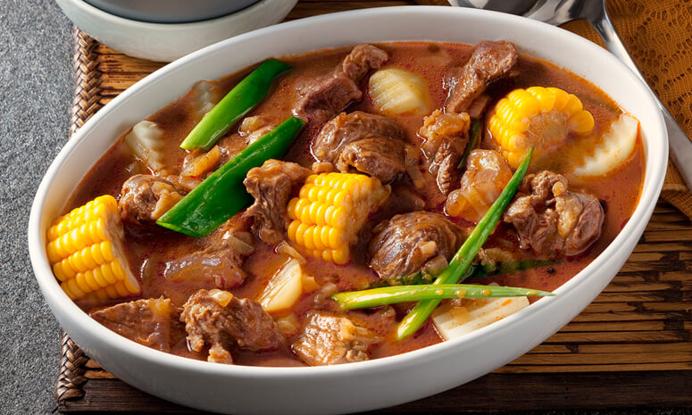

Bulalo Recipe

Bulalo
It’s a well known fact that Filipinos love stew and soup dishes.
From the sour sinigang to the sweet tinola, there’s guaranteed
to be a soup dish
for every flavor palate preference –– all
great to sip and enjoy, especially during long, cool nights.
But one of the most popular, and arguably
most delicious, soups
out there, is the classic Bulalo, or beef shank stew.
Ingredients
- 2 lbs beef shank
- ½ cabbage leaf individually detached
- 1 bundle bok choy
- 2 cobs corn each cut into 3 parts
- 2 Tablespoons whole peppercorn
- 1/2 cup green onions cut unto 1 1/2 inch pieces
- 1 onion
- 34 ounces water
- fish sauce to taste optional
Instructions
- In a big cooking pot, pour in water and bring to a boil
- Put-in the beef shank followed by the onion and whole pepper
corn then simmer for 1.5 hours (30 mins if using a pressure
cooker) or
until meat is tender.
- Add the corn and simmer for another 10 minutes
- Add the fish sauce,cabbage, pechay, and green onion (onion leeks)
- Serve hot. Share and Enjoy!